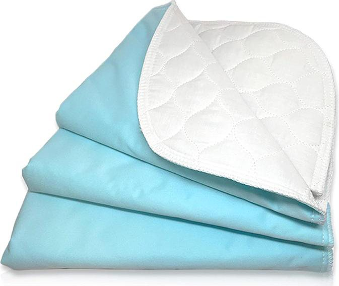
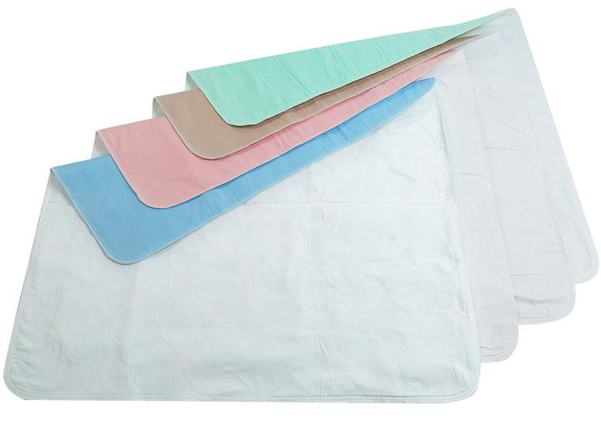

Die waschbare VELCURA-Unterlage
Eine flache, gesteppte, vierlagige Unterlage, die auf das Laken kommt – unter die Person, das Tier oder das Kind. Sie saugt auf, hält dicht und wird sauber gewaschen, hunderte Male.
 12
12Aufbau
Gesteppte Oberlage, Saugkern, TPU-Sperrschicht und Rückseite: was jede Lage leistet und welche Materialien es gibt.
Mehr erfahrenSaugleistung
Drei Saugstufen, wie wir Aufnahmevermögen, Rücknässe und Wasserdichtheit prüfen und was die Zahlen bedeuten.
Mehr erfahrenSpezifikationen
Neunzehn Standardgrößen von 18 × 24 in bis 72 × 72 in, dazu Farben, Gewichte und Verpackung.
Mehr erfahrenWaschen & Pflege
Waschtemperaturen, Trocknen, Desinfektionsoptionen und das Pflegeetikett, das wir drucken.
Mehr erfahrenStandardausführung
| Oberlage | Weiches gebürstetes Polyester 90 g/m² (Standard); Optionen Baumwolle, Bambus, Frottee oder Schlingenware; 12 Steppmuster |
| Saugkern | Vernadeltes Polyester / Viskose (95/5 oder 65/35), 200 / 230 / 270 / 340 g/m² |
| Sperrschicht | TPU-Folie 0,025 mm, 30 g/m² (atmungsaktiv) oder PVC |
| Unterseite | Gebürstetes Polyester 90 g/m², rutschfest; oder Strickstoff |
| Kante | Schrägband-Einfassung, doppelt genäht, abgerundete Ecken |
| Haltbarkeit | 300 Waschzyklen (Standard), optional 95 °C-Ausführung für Einrichtungen |
| Farben | 8 Standardfarben und Druckdesigns; jede Farbe nach Pantone |
| Zertifikate | Stoffe mit OEKO-TEX® Standard 100, REACH-Prüfung, CPSIA (Baby) |
 13
13Acht Ausführungen, ein Qualitätsstandard
Alle Ausführungen durchlaufen dieselben Qualitätskontrollen und sind in jeder Größe und Farbe erhältlich.
 14
14Normale Ausführung
Ober- und Rückseite aus gebürstetem Polyester um einen hochsaugfähigen Kern.
Entdecken
15Baumwolloberfläche · PVC-Rückseite
Baumwoll-Oberstoff, zusätzliche Polsterung und PVC-Rückseite.
Entdecken 16
16Bambusstoff
Fünf Lagen mit kühlem Bambus-Oberstoff.
Entdecken 17
17Frottee
Frottee-Oberstoff, der Flüssigkeit schnell aufnimmt.
Entdecken 18
18Mit Einstecklaschen
Lange Seitenlaschen werden unter die Matratze gesteckt.
Entdecken 19
19Mit Griffen
4, 6 oder 8 Griffe zum Anheben und Drehen.
Entdecken
20PVC-Rückseite
Wirtschaftliche, vollständig wasserdichte PVC-Sperrschicht.
Entdecken 21
21Swift Dry
Schlingenware-Oberstoff über einem starken 340-g/m²-Kern.
EntdeckenOptionen und Sonderausführungen
Farben, Drucke & Steppung
8 Standardfarben, Druckdesigns und 12 Steppmuster.
Mehr erfahrenWasserdichte Lätzchen für Erwachsene
Fünf waschbare Lätzchen-Designs, VC-BIB01 bis VC-BIB05.
Mehr erfahrenCare-Pro 95
Polyesterreiche Ausführung für Einrichtungen, waschbar bei 95 °C.
Mehr erfahrenPaw Guard
Kratzfeste, rutschfeste Ausführung für Haustiere.
Mehr erfahrenBereit für Ihre eigene Linie waschbarer Unterlagen?
Nennen Sie uns Markt, Größen und Mengen. Innerhalb eines Werktags erhalten Sie Datenblatt und Staffelpreise.